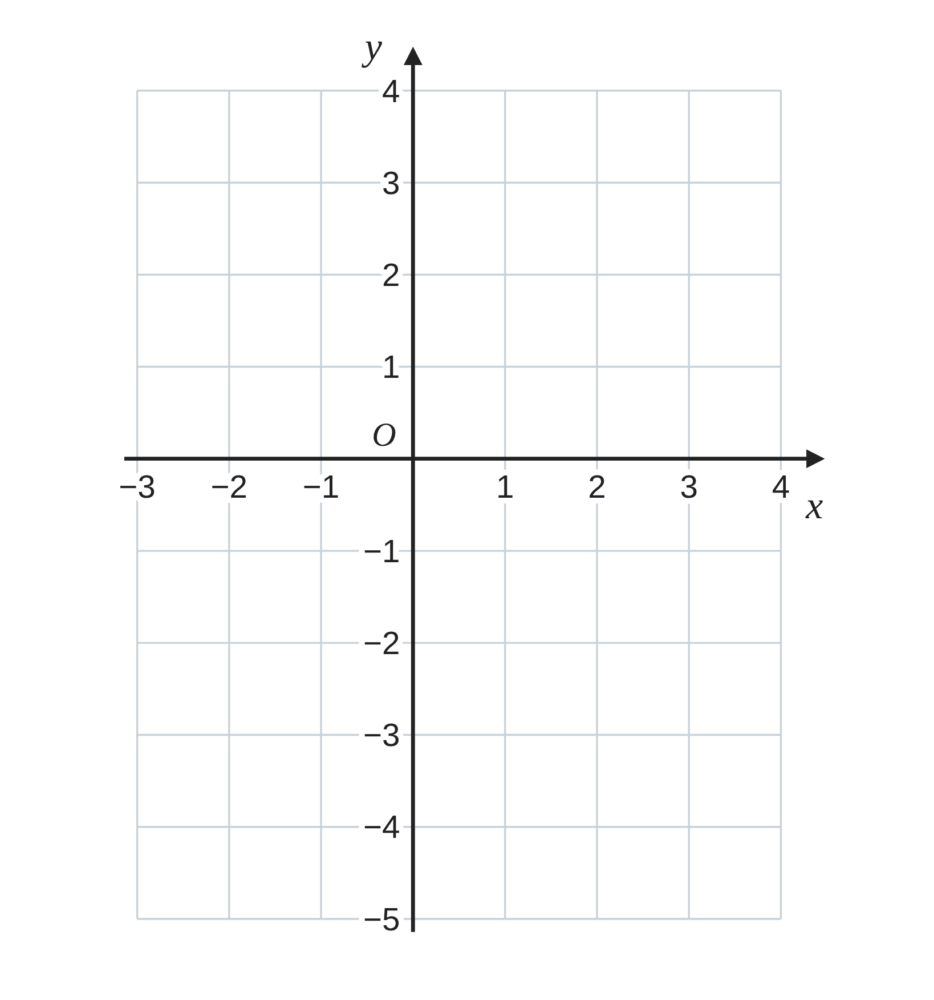
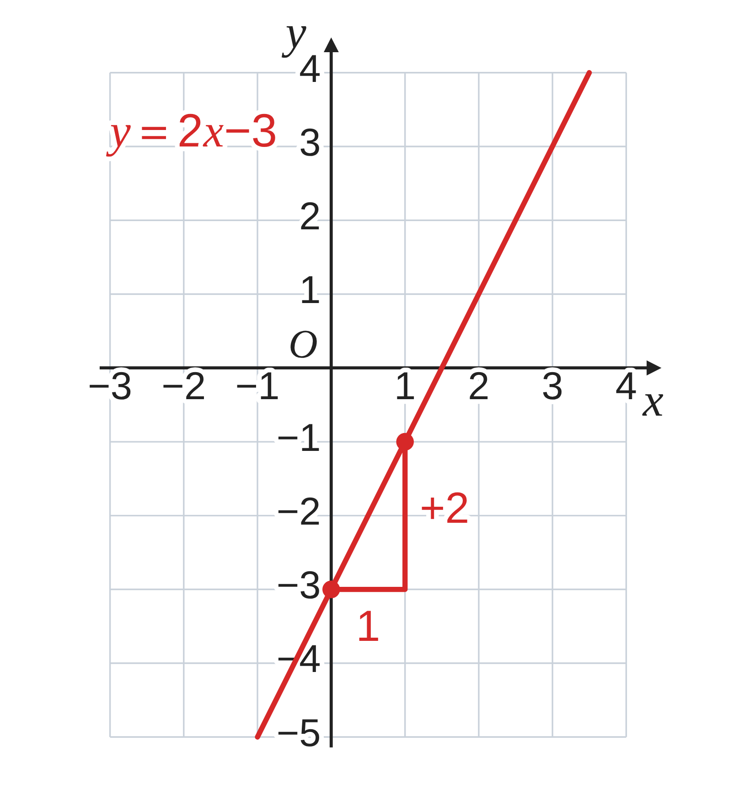
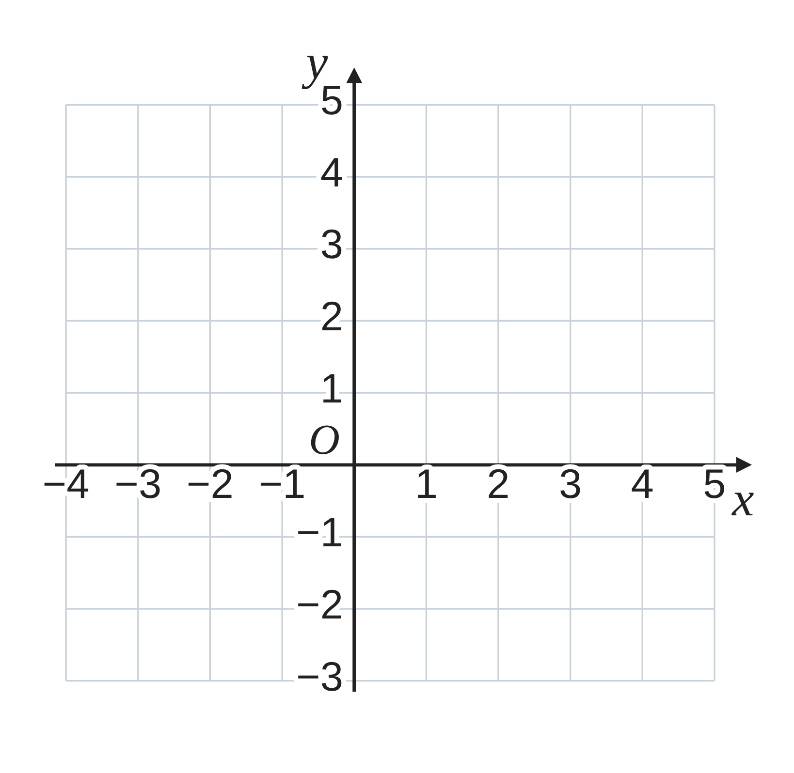
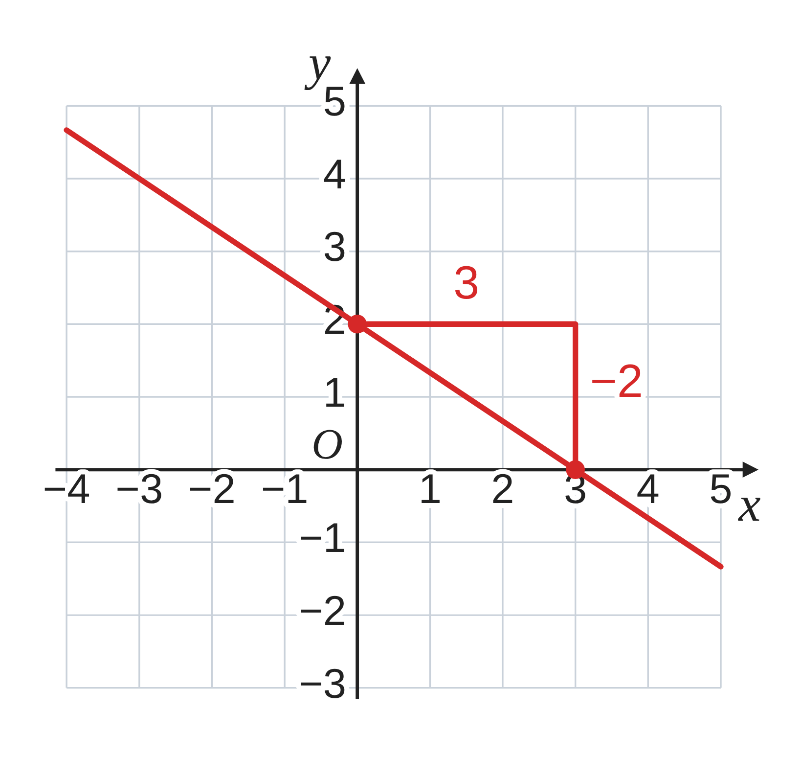
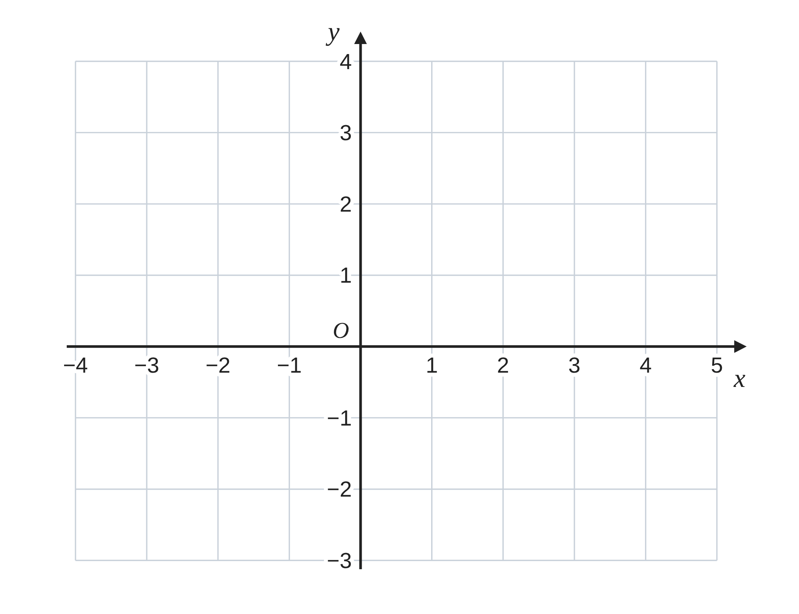

ペア学習
第6時 傾きと切片を使って、グラフをかこう
第5時の重要語句から、1人1問ずつ、言葉を選んで出題する。
聞かれた人は、その言葉の意味を、自分の言葉で言う。
傾き
右上がり
右下がり
一次関数 第6時 傾きと切片を使って、グラフをかこう
めあて
第6時 傾きと切片を使って、グラフをかこう
学習課題
一次関数 y＝2x−3 のグラフを、
傾きと切片を使って、右の座標平面にかこう。
グラフのどこに、傾きと切片が現れるかを考えて、
かいた順を書こう。
【かいた順】点のとり方を、順に書こう。

一次関数 第6時 傾きと切片を使って、グラフをかこう
学習課題のまとめ
第6時 傾きと切片を使って、グラフをかこう
y＝2x−3 のグラフを、傾きと切片を使ってかこう。
かいた順
① 切片が −3 だから、点 (0, −3) をとる。
② 傾きが 2 だから、右へ 1、上へ 2 進んだ
点 (1, −1) をとる。
③ 2点を通る直線をひく。

一次関数 第6時 傾きと切片を使って、グラフをかこう
ことば
第6時 傾きと切片を使って、グラフをかこう
一次関数のグラフ（直線）は、次の順にかく。
① から、y 軸上の点 (0, b) をとる。
② から、もう1つの点をとる。
（右へ 1 進んで、上へ a 進む。a が負の数なら、下へ進む。）
③ 2点を通る をひく。
傾きが p⁄q のときは、右へ 、上へ 進んだ点をとる。
一次関数 第6時 傾きと切片を使って、グラフをかこう
ことば
第6時 傾きと切片を使って、グラフをかこう
一次関数のグラフ（直線）は、次の順にかく。
① 切片から、y 軸上の点 (0, b) をとる。
② 傾きから、もう1つの点をとる。
（右へ 1 進んで、上へ a 進む。a が負の数なら、下へ進む。）
③ 2点を通る直線をひく。
傾きが p⁄q のときは、右へ q、上へ p 進んだ点をとる。
一次関数 第6時 傾きと切片を使って、グラフをかこう
例題
第6時 傾きと切片を使って、グラフをかこう
一次関数
y＝−
2
3
x+
のグラフを、右の座標平面にかこう。

一次関数 第6時 傾きと切片を使って、グラフをかこう
例題 解答
第6時 傾きと切片を使って、グラフをかこう
一次関数 y＝−
2
3
x+
2
のグラフ
① 切片が 2 だから、点 (0, 2) をとる。
② 傾きが −
2
3
だから、右へ 3 進んで、下へ 2。
点 (3, 0) をとる。
③ 2点を通る直線をひく。
（3つ目の点 (−3, 4) も通る。）

一次関数 第6時 傾きと切片を使って、グラフをかこう
考えよう
第6時 傾きと切片を使って、グラフをかこう
切片が整数でない一次関数 ア y＝
1
2
x+
1
2
のグラフは、
どのようにかけばよいだろう。
①
ア のグラフを、座標平面にかこう。
②
どのようにかいたか、かき方を説明しよう。
③
イ y＝(2⁄3)x−1⁄3 のグラフも、②のかき方でかけるか、試そう。気づいたことも書こう。

発展
（解き終わった人は）
y＝(2⁄5)x+1⁄5 のグラフが通る点のうち、x 座標も y 座標も整数の点を、3つ見つけよう。気づいたことも書こう。
一次関数 第6時 傾きと切片を使って、グラフをかこう
振り返り
第6時 傾きと切片を使って、グラフをかこう
今日のめあて
切片
傾き
直線
今日わかったことを、ペアで1つずつ言い合おう。
ワークシートと演習プリントを出そう。（未完成でも出す）
一次関数 第6時 傾きと切片を使って、グラフをかこう